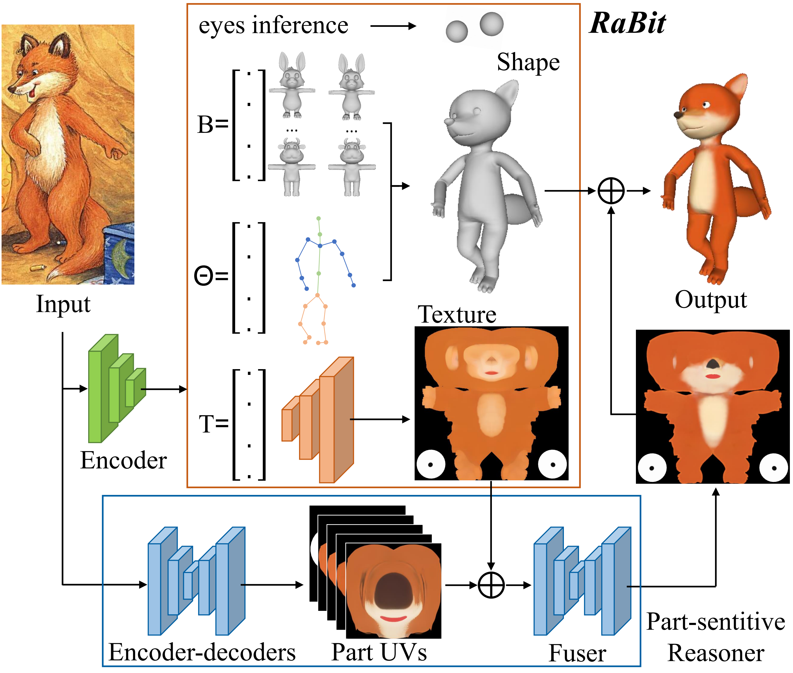
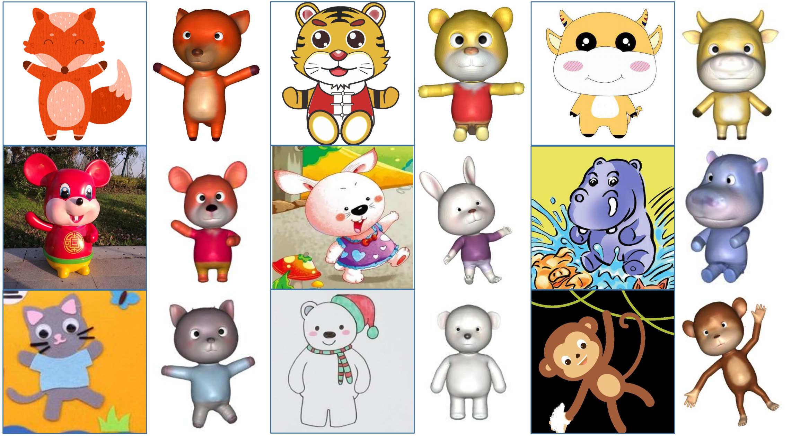

Assisting people in efficiently producing visually plausible 3D characters has always been a fundamental research topic in computer vision and computer graphics. Recent learning-based approaches have achieved unprecedented accuracy and efficiency in the area of 3D real human digitization. However, none of the prior works focus on modeling 3D biped cartoon characters, which are also in great demand in gaming and filming. In this paper, we introduce 3DBiCar, the first large-scale dataset of 3D biped cartoon characters, and RaBit, the corresponding parametric model. Our dataset contains 1,500 topologically consistent high-quality 3D textured models which are manually crafted by professional artists. Built upon the data, RaBit is thus designed with a SMPL-like linear blend shape model and a StyleGAN-based neural UV-texture generator, simultaneously expressing the shape, pose, and texture. To demonstrate the practicality of 3DBiCar and RaBit, various applications are conducted, including single-view reconstruction, sketch-based modeling, and 3D cartoon animation. For the single-view reconstruction setting, we find a straightforward global mapping from input images to the output UV-based texture maps tends to lose detailed appearances of some local parts (e.g., nose, ears). Thus, a novel part-sensitive texture reasoner is designed to make all important local areas perceived. Experiments further demonstrate the effectiveness of such a novel design, both qualitatively and quantitatively. We will release both 3DBiCar and RaBit to the research community.
Here shows some 3D models in our Dataset.
With 3DBiCar, we propose the first parametric model of 3D biped cartoon characters (RaBit), which contains a linear blend model for shapes and a neural generator for textures. RaBit simultaneously parameterizes the shape, pose, and texture of the 3D biped character.
split video here?
display some objs here?
Single-view reconstruction (SVR) is one of the most popular tasks of efficient 3D content generation, and recent work has made noticeable progress on human reconstruction based on parametric model of human characters (e.g., SMPL).
 *To verify the practicality of our proposed 3DBiCar and RaBit, we present our baseline method BiCarNet for single view reconstruction for bipled cartoon characters  * Our BiCarNet is capable of generating vivid 3D cartoon characters with only single-view image input.display impletement video here?
display some objs here?
display some objs here！
split video here！
TBD(RaBit)
TODO:
1.视频是否要外部引入...（当前视频是临时使用的）
2.obj的使用暂时还没有打穿